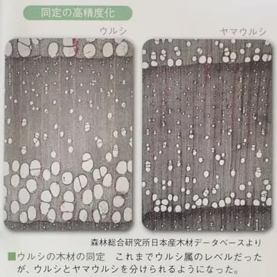
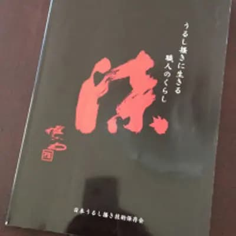

Lacquer cup. It makes water taste really good.
Compare it with other materials such as glass, ceramic, metal, and plastic.
There will be times when you will feel that lacquer is the way to go today.
This red is a new pigment that contains no heavy metals.
Please feel free to use it.
In Oita, there is a place called Niu. Tansa is a mineral composed of mercury sulfide (HgS). It is also known as wise man's stone, red mercury sulfide, cinnabar, and vermillion sand.
In Japan, it has been called "Ni" since ancient times and is a necessary mineral in the conservation and restoration of cultural properties.
Handling of lacquerware
2017-10-03T10:00+09:00
The eggs are mashed with a metal fork.
After this, the mayonnaise is added and stirred in.
If you stab the fork, it's not a good idea, but it's okay.
Please do not try this with other lacquerware.
Lacquer ware: How to remove tea stains
2017-09-17T17:00+09:00
I started using lacquer cups last year.
I use them for beer, wine, tea, coffee, milk, and water.
I have been using it a lot, but it has become blackened from leftover drinks and water stains after washing.
I soak them in household chlorine bleach to remove the stains.
It states "Do not use on lacquerware" in the handling precautions section.
I gave it a try.
The right side is the part soaked in bleach. Urushi is resistant to acid and alkali.
I was not sure about the vermillion pigment, but it is fine.
This is obvious, but why do we generally feel uneasy about it? If you drop it hard enough, it will crack, just like glass or ceramics.
I think the advantages that other materials don't have are the lightness and the fact that even if it chips, the pieces won't fly apart and it's safe.
How to Wash Lacquer Ware
2017-09-10T15:00+09:00
In the handling precautions section, it says "Do not use on lacquerware or other easily scratched items.
Do not use on easily scratched items such as lacquer ware.
I wash my own lacquerware with this Sarash . It's okay.
The detergent is a liquid type synthetic detergent." I use it normally!"
Every year, we display bowls that we use at home in the exhibition hall. Please have a look.
Please do not imitate us with other lacquerware.
Jounou Site, Saitama City Urushi identification
2017-09-09T23:00+09:00
Report on the Excavation of the Junou Peat Bed Site - Natural Remains
1982 Saitama Prefectural Board of Education
The wood excavated from this site is reported as "mountain urushi".
In a book published in 2014 by the National Museum of Japanese History, it is stated that "in this period, it was possible to identify the genus Urushi, but it was difficult to identify the species. The photo below was found as a reference.
If I had to choose between the proportions of the width of the annual rings and the size of the conduit, I would choose the poison oak tree.
It seems to have been modified quite a bit at other sites.
A panel discussion on this site was held at the Cultural Property Lacquer Association (Bulletin NO52). It is a pity that if it had been reported as a genus of poison oak at that time, the story would have expanded further.

Lacquer products and wood with lacquer scrapings have been excavated from the Minami-Kounuma site (Saitama City Board of Education).
By the way, I don't know of any old lacquer fossils yet.
Ginkgo trees dating back about 80 million years have been found in Japan.
I think it might be out there.
I just want to try different kinds of lacquer to make strong bowls...
Hokkaido Minamikayabe Town kanshitsu
2017-09-07T18:00+09:00
The world's oldest lacquer product made of hemp and lacquer
It says that the lacquer pieces with soil attached were asked to be examined by an American research institute.
I heard a rumor that this dating is questionable.？？？？？
A lacquer branch excavated at the Torihama shell mound in Fukui Prefecture seems to have been confirmed at 12,000 years old.
Those who insist on the theory that lacquer, both the wood and the technology, came from China via the Korean Peninsula may not want to admit it.
However, archaeology has a large range of imagination, and it is difficult to be definitive.
。
Red iron oxide
2017-09-03T13:00+09:00
I like bengal more after reading this article. Isn't it possible that with heat (energy), water and iron, life could be born? Isn't that the ancestor of lacquer, a life form before plants and animals? There is a possibility that the environment that is the origin of species can be found anywhere deep underground on the earth. My imagination is soaring. Link : Nature 543, 7643: March 2, 2017
Early life in hydrothermal vents. Presumed signs of life at least 3.77 billion years ago were found in jasper and carbonate rocks in northern Quebec, Canada, including tubular material made of red iron ore. (Excerpt from the text)
O-Bon
2017-08-11T21:00+09:00
O Ga Ra : The stalks of hemp that have been stripped of their bark.
It is used to light the welcoming and sending fires of the Ura-bon festival, and as chopsticks to accompany offerings. (From Weblio Dictionary)
Ramie is used not only in Shinto rituals, but also in Buddhist rituals.
Hemp seeds were also used to make shichimi pepper.
The Marijuana Control Law restricts the handling of marijuana to hemp fiber, mature stalks and their products, seed collection, and academic research, and requires a license for the handling of marijuana.
Recently, there have been a lot of violations regarding leaves, flowers, and other items that are prohibited from being traded.
Unfortunately, Hita's coarse hemp has not been approved for use in anything other than Kurume Kasuri shibori.
Preservation groups that use hemp bark as a dyeing tool discard the stalks, and groups that use hemp husks for taimatsu discard the bark (fiber).
However, hemp husks are generally available for sale. I wonder why.
This is a traditional material that has been handed down since before the Jomon period. I wish they would do something about it.
Kurume Kasuri
2017-07-25T12:00+09:00
A long time ago, my mother-in-law made me a kimono from a piece of fabric. My wife still wears it often.
Coincidentally, a hemp leaf pattern.
I had no idea that coarse hemp was used for this pattern.
Hemp can grow up to four meters in four months, and it grows large without much effort.
Because of this, it is an auspicious pattern with the hope that babies and children will grow up healthy and strong.
Although hemp is inconspicuous in lacquer bowls, it is an indispensable material to prevent the wood from cracking.
A party at the Tokyo American Club Frederick Harris Gallery last year.
My wife wore it as a kimono related to lacquer, although it was a Kasuri.
The members of the club were surprised to find out that they did not understand the characteristics of lacquer, which is indigenous to Japan, and the durability of lacquer.
The video of Mr. Shunzo Omori's lacquer scraping, the materials, and the works he created with the lacquer are very valuable.
Amount of sap per lacquer tree
2017-07-17T15:00+09:00

In this book, there is a section that summarizes the 16-year lacquer scraping diary left by Shunzo Omori.
In 1996, there were about 400 lacquer trees and the amount of lacquer scraped was about 24 kan. Based on this calculation, the amount of sap per lacquer tree is 225 grams.
In detail, there are five lacquer barrel at five Kan（An old Japanese unit of weight）.(7/1 - 8/5) (8/6 - 8/24) (8/25 - 9/14) (9/15 - 10/9) (10/10 - 10/29).
Assuming that Sakari lacquer is harvested around the time of Obon (usually by August), 400 lacquer trees are consumed to make two barrels, one for Hatsu-hen and one for Sakari-hen.
In recent years, there are many lacquer scrapers who collect only two lacquer barrels. It is scary to calculate the amount of lacquer trees consumed from the amount of sap produced. The quality labeling on the barrels has also become strange.